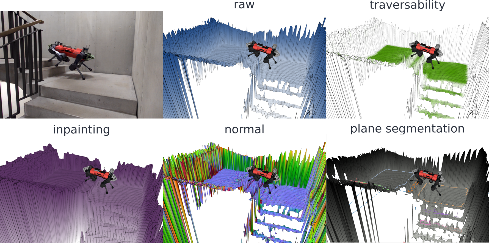
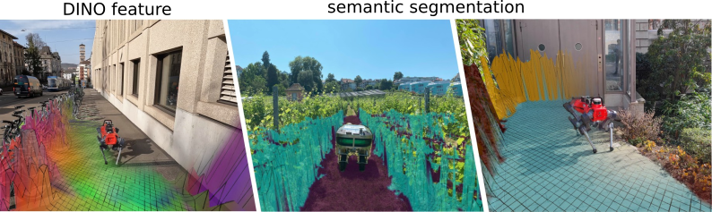

Elevation Mapping CuPy ROS2 Documentation
Welcome to the documentation for the official ROS2/Jazzy branch of
elevation_mapping_cupy.
This documentation tracks the ros2 branch, which is the actively maintained
ROS2/Jazzy line. The legacy ROS1 line remains on main.
Highlights
GPU-accelerated elevation mapping with CuPy.
Geometry, RGB, semantic image, and semantic pointcloud fusion.
ROS2 launch files and tests validated on a self-hosted NVIDIA runner.
Maintained ROS2 branch owner: Lorenzo Terenzi.
Start here
The legacy plane-segmentation stack is not part of the current ROS2 workspace.
The supported release surface for this branch is the Python/CuPy elevation
mapping pipeline plus the restored semantic_sensor package.


Citing
If you use elevation_mapping_cupy, please cite the following paper:
Elevation Mapping for Locomotion and Navigation using GPU
Hint
Elevation Mapping for Locomotion and Navigation using GPU IROS 2022 paper
Takahiro Miki, Lorenz Wellhausen, Ruben Grandia, Fabian Jenelten, Timon Homberger, Marco Hutter
@misc{mikielevation2022,
doi = {10.48550/ARXIV.2204.12876},
author = {Miki, Takahiro and Wellhausen, Lorenz and Grandia, Ruben and Jenelten, Fabian and Homberger, Timon and Hutter, Marco},
keywords = {Robotics (cs.RO), FOS: Computer and information sciences, FOS: Computer and information sciences},
title = {Elevation Mapping for Locomotion and Navigation using GPU},
publisher = {International Conference on Intelligent Robots and Systems (IROS)},
year = {2022},
}
Multi-modal elevation mapping if you use color or semantic layers
Hint
MEM: Multi-Modal Elevation Mapping for Robotics and Learning MEM paper
Gian Erni, Jonas Frey, Takahiro Miki, Matias Mattamala, Marco Hutter
@misc{Erni2023-bs,
title = "{MEM}: {Multi-Modal} Elevation Mapping for Robotics and Learning",
author = "Erni, Gian and Frey, Jonas and Miki, Takahiro and Mattamala, Matias and Hutter, Marco",
publisher = {International Conference on Intelligent Robots and Systems (IROS)},
year = {2023},
}